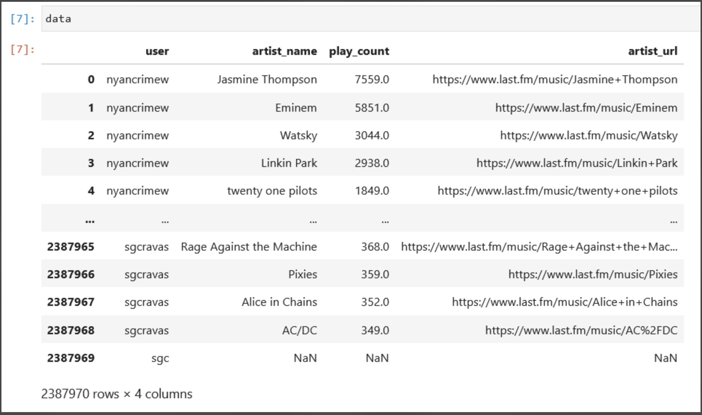
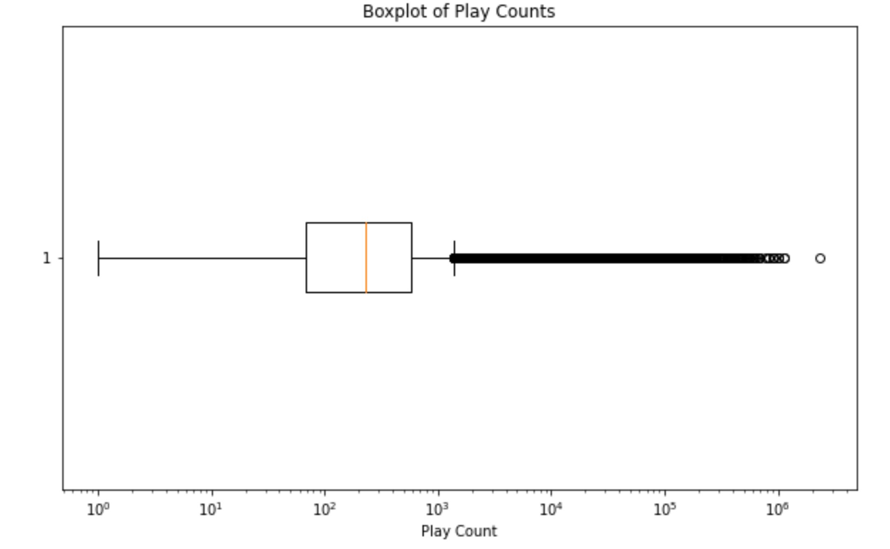
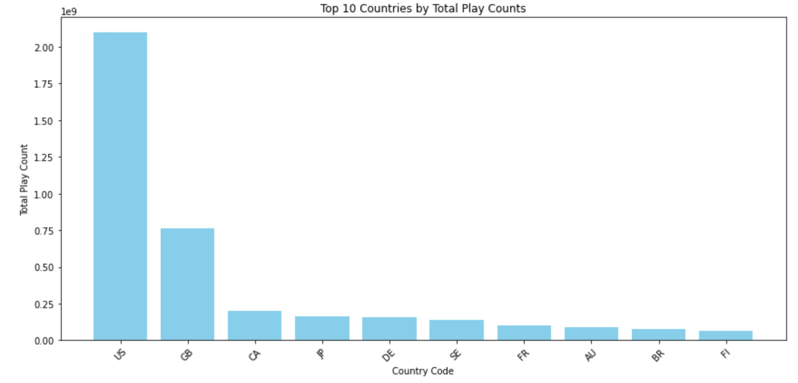
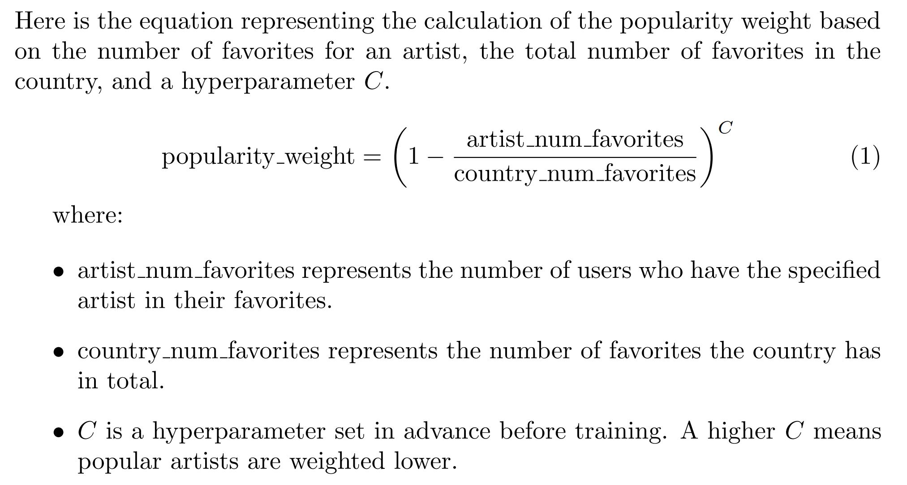
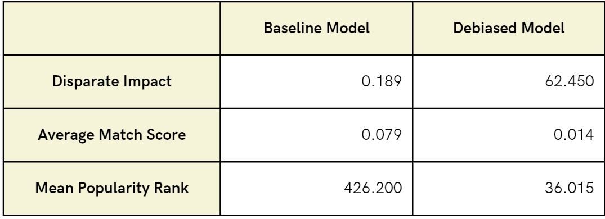
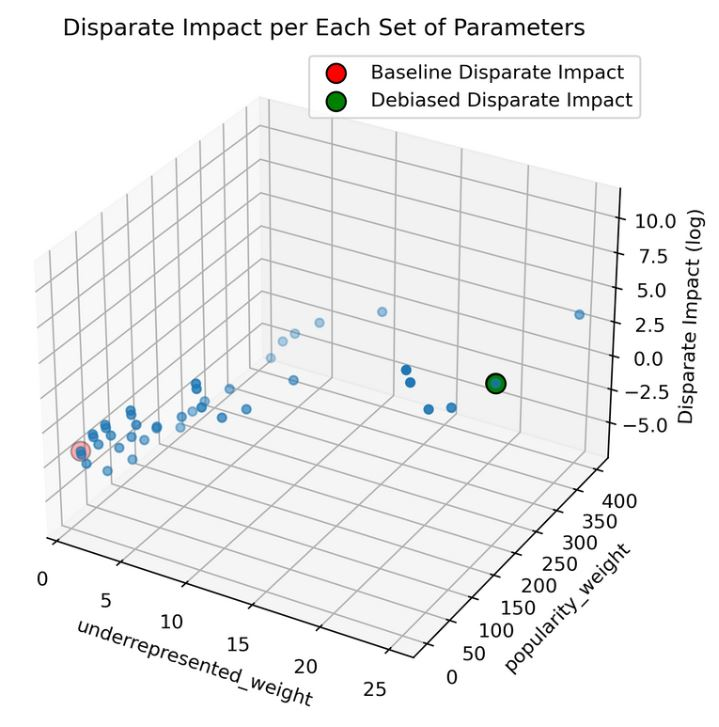

How We Work
Learn about how we are able to provide globally diverse music recommendations curated to your taste here!
Overview and Data Description
Here is a general outline of the steps we took in order to create our app and a description of the data we used
- First, we chose a dataset upon which we could build our music recommendation algorithm.
- We used two datasets that originated from Last.fm, a music service that uses a technique called "scrobbling" to track users' music listening habits across various platforms and builds a detailed profile of their musical tastes.
- With the Last.fm API, we acquired a user dataset by first selecting a starting user and adding a randomized list of that user’s friends to the total user list.
- In similar fashion, we got an artist dataset by using both the Last.fm API and MusicBrainz (an open music encyclopedia that collects music metadata) API.
- Then, after performing data cleaning (such as filtering out all users with less than 50,000 total plays on their favorite artists to avoid users with unreliable litsening habits), preprocesing, and exploratory data analysis (detailed in our report and highlighted in the images below), we were left with a dataset consisting of the following variables: user, representing the user's ID; artist_name, the name of the artist; play_count, indicating the number of times the user has played the artist's tracks; artist_url, the URL to the artist's Last.fm page, artist_name, the name of the artist; and country_code, the code of the country of artist's nationalities. In the end, our dataset consisted of 6,904 total users. This is the dataset upon which we could build our music recommender model.
- Second, after the acquisition of our final dataset, we decided upon a basline machine learning method for our recommender system that would work best with our dataset so that we can have a basic recommender system upon which we later mitigate regional bias.
- Third, we mitigated the regional bias of this basline model.
- Fourth, we merged our debiased model with our webapp interface to present the webapp you see today!
- Below is a portion of our finalized dataset

- Below is a box plot from our EDA which demonstrates that there is, in fact, significant disparity in popularity among artists since there is a large number of artists have relatively few plays while there's a smaller number of artists with a very high number of plays.

- Below is a bar graph of the geographic distributions of the top 10 artist's countries (by play count) which demonstrates the US disproportionately dominates the music industry since they have a much larger total play count compared to the others. This helped to inform our hyperparameters in our model development stages.

Methodology
Baseline Model Development
In order to develop our baseline mode, we took the following steps:
- First, we decided upon a machine learning method that would best work with our dataset.
- We decided upon a method known as singular value decomposition (SVD) which is essentially a machine learning method that finds the most important patterns in a collection of data which are often not immediately apparent.
- We decided SVD for two main reasons: First, given the large size of our dataset, it was beneficial for us to use SVD because it aids in computational efficiency due to its ability to perform dimensionality reduction without losing much important information. Second, using its ability to discover latent features, it allows us to uncover hidden patterns/features in the data which is useful for our model development given that the only features we had to work with to build our baseline model were the user, the artist name, and the play count.
- For the acutal implementation of the SVD method, we used Python and applied its TruncatedSVD method from its sklearn.decomposition module to decompose our user-artist interaction matrix into lower-dimensional matrices representing latent factors associated with users and artists.
- This allowed us to predict how much a user with an inputted set of liked artists will enjoy every other artist in our dataset.
- One main assumption we use behind implementing our SVD model was that we assumed that users with similar music listening patterns are likely to have similar preferences. This is the idea behind 'collaborative filtering' which is a popular framework used in many recommender systems.
Model Debiasing
In order to mitigate regional bias in our baseline model, we implemented the following steps:
- Assigned initial values: We began by assigning each artist a base score establishing a preliminary ranking based on user preferences without regional considerations.
- Reweighting for Underrepresented countries: Next, we multiplied the base scores for artists from underrepresented countries by an underrepresented_weight hyperparameter to help prioritize artists from these countries.
- Popularity-based adjustment: We further adjusted each artist's score by a popularity_rank value, which is inversely proportional to their popularity within their home country. This means that artists like Taylor Swift, who have a large number of domestic favorites, would have their score reduced more than a less popular artist from the same country, such as At The Drive-In. The degree of this adjustment was governed by another hyperparameter, popularity_weight, following an exponential formula to ensure that minor differences in popularity are appropriately magnified and impact the final recommendation.
- Final Score Calculation: Finally, we calculated a popularity weighted score by multiplying the reweighted score by the popularity_rank. This step ensures a diverse range of artists are recommended, avoiding the dominance of only a few artists from any particular country, thus allowing for a recommendation list that reflects a broader international scope.

Results/Discussion
Here are the results and interpretations from our basline and debiased models
- Firstly, we measured our model's performance using the following metrics:
- Disparate Impact: A metric that assesses if an algorithm unintentionally discriminates against certain groups more than others (i.e. artists from underrepresented vs. artists from overrepresented countries), revealing potential bias in positive outcomes (i.e. the event in which an artist gets recommended).
- Average Match Score: the mean of an artist’s score that determines how likely a user will like them
- Mean Popularity Rank: A metric that shows how popular the artists recommended are, based on average number of listeners the recommended artists have within the dataset.
- Here were the results of these metrics from both baseline and debiased models:

- As it can be seen...
- Our disparate impact metric improved from 0.189 to 62.450, significantly enhancing visibility for underrepresented artists and promoting equitable recommendations.
- There was a minor decline in Average Match Score score from 0.079 to 0.014 which aligns with our broader goal of offering a diverse music selection over perfect matches.
- Our mean popularity rank metric improved notably from 426.200 to 36.015, demonstrating the model's success in recommending lesser-known artists fitting users' tastes, and broadening music discovery.
- Additionally, from the following graph...

- It can be seen that underrepresented_weight has a high positive correlation with disparate impact while popularity_weight doesn’t affect it as much.
- Overall, it can be concluded that there is roughly a 300x better outcome for artists from underrepresented countries using our model.